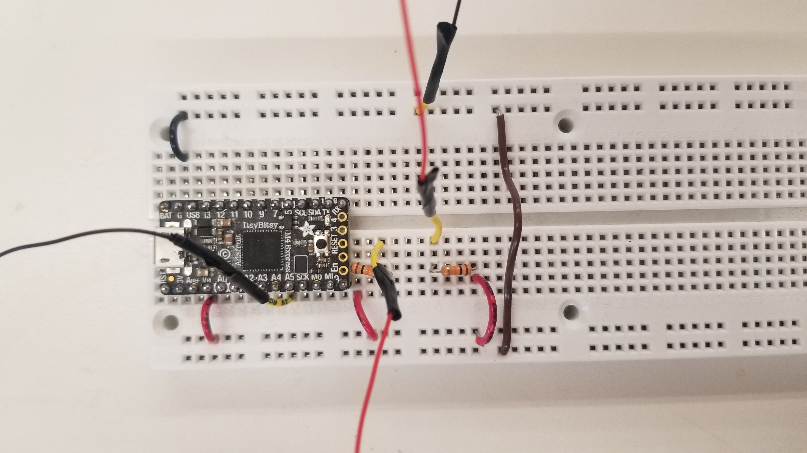
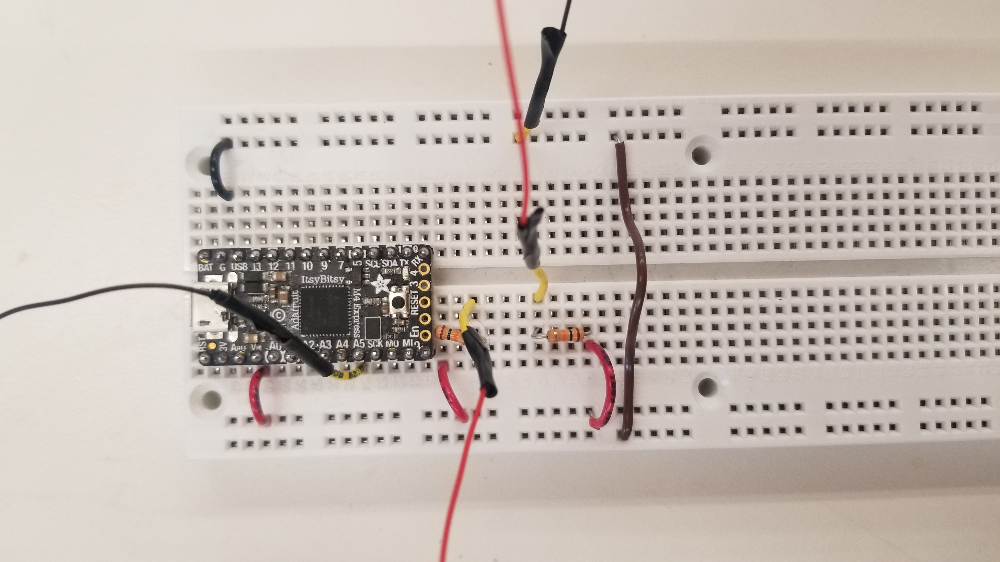
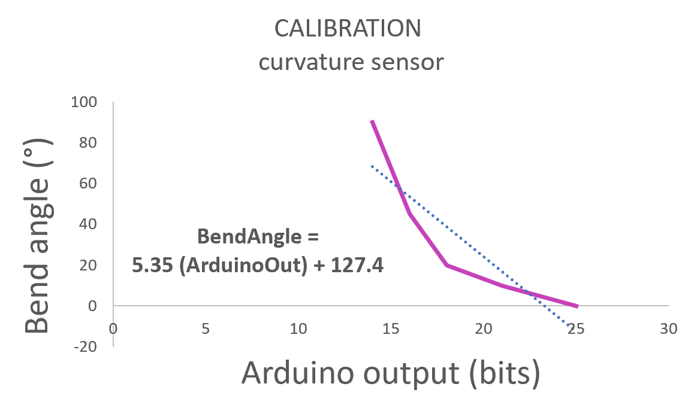

Week 6: Electronic Input Devices
Motion tracking based on capactive sensing
Motion tracking is used in many applications. This version resembles a 2D sketchpad. Hover your finger with a copper sticker over the sketch area and the sensor will sense the paths your finger has taken over a period of time and display.
How the sensor works
The sketch pad is made up of an array of capacitors. When another capacitor plate, in this case the Cu sticker (or even just your finger!), comes close to the array, it will cause a change in voltage in one of the capacitors in the array that we can detect allowing us to identify where the finger was hovering over.

Figure: Sketchpad

Figure: Skethcpad in use
Each capacitor block is connected to a supply voltage that charges the individual capacitor plates in the array. The capacitors are connected to resistors. These resistors are critical because they modify the time it takes to charge the capacitor. In other words, it dictates how sensitive our system is when we hover the sticker over the array. If we want high fidelity and resolution in our sketch pad, this would we an important parameter to work with. The array of capacitors in this version is held together on a fabric sheet. However, any medium is possible as long as it is non-conductive. We look forward to casting the arry in a silicone based material in another version.

Figure: Circuit schematic of an individual capacitive element in the sketchpad array.

Figure: Wiring schematic of Arduino Uno.
Code logic
The overall logic in this code is as follows: COUNT t for time and set t range. READ IN each individual element in the array. IF a signal falls under a THRESHOLD, THEN save current t. Each element will have their own array of ts which we can combine into a matrix containing all the ts pertaining to each element. To display the motion of the finger over t, we export out t matrix into MATLAB where we will do the plotting. We name every element in the array with an (x,y) coordinate. We develop an idividual plot for every t. For every t, we look for the element not equal to 0 and display a dot on the simulated array (i.e., x-y graph). Going through the plots from t=0 to t=t_max will produce the path the finger took. A fanicer version of this plot can be explored further on MATLAB. Some ideas include: ...
Calibration
Each sketch pad, array-of-capacitor design will vary. The size of the copper sheets, the spacing between them, and the placement of the sticker onto a finger will effect the capacitance of an individual capcitor element. Lucky for us, the range in capacitance and ultimetaly, voltage produced at V_out, will be within a discrete range than we can identify and use in the Arduino code as the threshold. We did several trials and concluded that the threshold is ... V.
See below for some experimental notes.
Figure: Calibration of sketchpad (i.e., capacitor array).
Hardware

Figure: Hardware components used to build sketchpad. Resistor - 1 Mohm Capacitor - Cu sheet (1x1 cm) Microcontroller - Arduino UNO Backing - cotton sheet (10 x 10 cm)
Curvature sensor for training athletes
Exercising properly is not trivial. Proper form is important to get the most out of a workout and to prevent injuries. Mistakes in exercise technique is not uncommon. This sensor will detect improper form and help you correct it. It senses bends on the part of the body that you attach it to and displays how to correct your form until you do.

Figure: Here are some examples of improper technique involving a bend in posture where there should be a straight posture instead. (most common bodyweight exercise mistakes by Adidas)

Figure: (left) Exercise correcting band prototype. (right) Example showing how the display will help the trainee improve their form.
How the sensor works
This protoype is made up a tube with an LED on one end and a photoresistor on the other. When the tube is straight, all the light from the LED is captured by the photoresistor; as the tube bends, the amount of light that reaches the photoresistor is proportional to the amount of bending. Inspiration for this work came from the Harvard Microrobotics Lab ( check it out here! ) The overall circuit for this sensor is a voltage divider. This device outputs a a volage output that varies depending on R_photoresistor.
 

Code logic
Calibration
A photoresistor's resistance decreases with an increase in light. With no bend the resistance (R_min) is close to 0 ohms and therefore the circuit will output close to 0V. With a large bend like 90 degrees where no light passes to the opposite end of the tube, resistance (R_max) will be high resulting an output voltage signal of V_max. We conducted some experiments to note V_max, R_max, R-min and calibrate the system with a plot of Bend vs V_out.
Hardware

Figure: Hardware components used to build exercise band prototype. Photoresistor - LED - red Microcontroller - Arduino UNO Tubing - material, diameter Wiring - microwires Adhesive - Electrical tape (black)
Go back to main page.